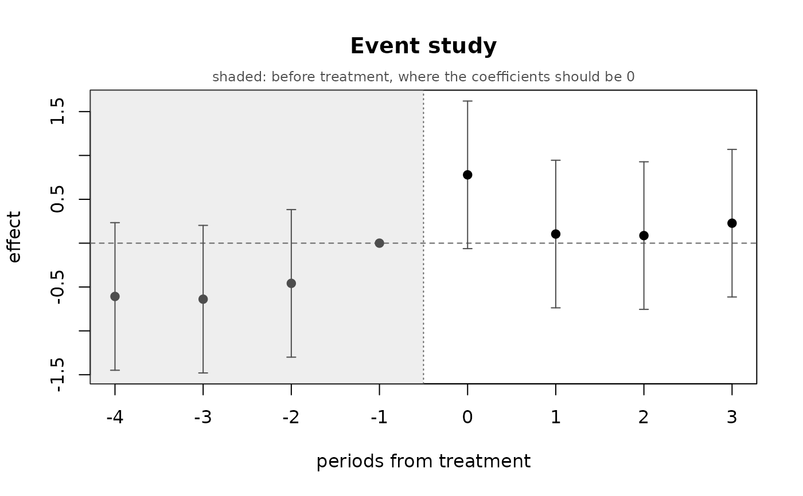

Event-study plot for a difference in differences
Source:R/ilm_did.R, R/zzz-iml-aliases.R
ilm_plot_did.RdOne coefficient per period relative to treatment, with intervals. The pre-treatment coefficients are the diagnostic: under parallel trends they sit near zero, and the shape of any departure says more than a single test does.
Usage
ilm_plot_did(
x,
main = "Event study",
xlab = "periods from treatment",
ylab = "effect",
...
)Arguments
- x
An
ilm_did()result.- main, xlab, ylab
Labels.
- ...
Passed to
graphics::plot().
Examples
set.seed(1)
d <- expand.grid(unit = 1:40, time = 1:8)
d$treated <- as.integer(d$unit <= 20)
d$post <- as.integer(d$time >= 5)
d$y <- 1 + 0.3 * d$time + rnorm(40)[d$unit] +
0.8 * d$treated * d$post + rnorm(nrow(d))
fit <- ilm_did(d, "y", "unit", "time", treated = "treated", post = "post",
verbose = FALSE)
ilm_plot_did(fit)
